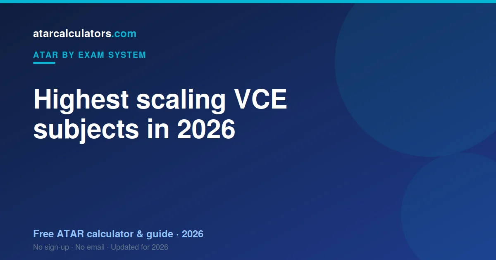

The highest-scaling VCE subjects in 2026 are typically Specialist Mathematics, Latin, Chemistry, high-level languages and Mathematical Methods. Scaling order shifts slightly each year with cohort strength, so always check the latest official VTAC scaling report. A subject scales up because its cohort is strong, not because it is hard.
Key takeaways
- The highest-scaling VCE subjects are usually Specialist Mathematics, Latin, Chemistry and high-level languages.
- A subject scales up because its cohort is strong, not because it is hard.
- The order shifts slightly each year with cohort strength.
- Always check the latest official VTAC scaling report.
- A strong result in any subject beats a weak one in a high-scaling subject.
- Choose subjects you can excel in; use scaling as a tiebreaker.

The highest-scaling VCE subjects
The same studies appear near the top of VTAC's report every year. In the VCE, Specialist Mathematics, Latin, Chemistry, high-level languages and Mathematical Methods scale strongest.
Victoria publishes more scaling detail than any other state, which is why VCE scaling is both the best documented and the most misused list in the country.
Why these subjects scale up
What connects them is intake, not difficulty. Students who take Specialist Mathematics or Latin tend to perform well across their whole VCE, and VTAC's scaling registers that pattern.
The study is not credited for being hard. Its cohort is recognised for being strong.
Higher maths in detail
Maths shows it most clearly. Specialist Mathematics scales strongest of any VCE study, with Mathematical Methods close behind.
Further Mathematics sits at the other end — not because it is easy, but because it draws a very wide cohort. Same subject family, opposite ends of the table, entirely because of who enrols.
The sciences and scaling
Chemistry sits high every year, with Physics close and Biology scaling solidly. Their students perform strongly across the board.
Biology's broader cohort is why it sits below Chemistry — a difference in intake, not in demand.
Subjects that scale down
Broad-entry studies tend to scale down. Further Mathematics is the best-known Victorian case.
It is still not a bad choice. A high study score in Further Mathematics regularly beats a mediocre one in Specialist — and only your best four count in full.
Where scaling data comes from
The authoritative source is VTAC's published scaling report, released each year. It describes last year's Victorian cohort and promises nothing about yours.
Does the scaling order change each year?
Slightly. VTAC recalculates scaling annually against that year's cohorts, so the order shifts. The broad shape — Specialist, Latin, Chemistry, languages, Methods near the top — is stable.
A smarter way to choose subjects
Start from your strengths, then check the report. Victoria counts four studies in full, so a weak study inside your Primary Four costs you far more than a strong fifth ever gains you back through the 10% increment.
Scaling is not the only factor
Scaling is one input, not the decision. An English study must be in your calculation regardless, and course prerequisites outrank any scaling table.
Estimate your ATAR
Rather than rely on a list, see how your own scores land. Our VCE ATAR calculator scales each study score, builds the Primary Four, and adds the increments.
Languages and scaling
High-level languages scale very well, often near the top, and Latin sits highest of all. Small, strong cohorts drive that result.
The warning is standard: a language you cannot rank in occupies a slot in your Primary Four and returns very little.
How to read a scaling report
VTAC's scaling report looks technical and says something simple: study scores in each study were adjusted by this much, because those students performed like this across everything else.
Because Victoria publishes it in detail, it is unusually tempting to treat it as a plan. It is a record, not a forecast.
The takeaway on high-scaling subjects
A high-scaling study helps only if you rank well in it. Use the report to ask questions, not to pick studies — your Primary Four is where the aggregate is decided.
Choosing well, in short
Specialist Mathematics, Latin, Chemistry and the languages scale well because strong students take them. Further Mathematics scales down because everyone takes it. Neither fact tells you what to choose — your ability to rank in a study does.
A note on subject prerequisites
Scaling is not the only consideration. An English study is compulsory in your calculation, and university courses set prerequisites that no amount of scaling can substitute for.
Estimate your overall ATAR
Once you have a list in mind, test it. Our VCE ATAR calculator shows what your studies produce as an aggregate.
Common questions
What are the highest-scaling VCE subjects in 2026?
The highest-scaling VCE subjects are typically Specialist Mathematics, Latin, Chemistry, high-level languages and Mathematical Methods. They scale up because their cohorts are strong across all subjects.
Which VCE subjects scale down?
Broad-entry subjects tend to scale lower, along with some practical subjects. You can still get a strong scaled result by ranking near the top of them.
Where does scaling data come from?
The authoritative source is VTAC’s official scaling information, published each year. It shows how each subject actually scaled that year, so avoid old or made-up lists online.
Does the scaling order change each year?
Slightly. Scaling is recalculated each year based on that year’s cohorts, so the exact order shifts. Higher maths and the sciences reliably sit near the top, but the fine detail changes.